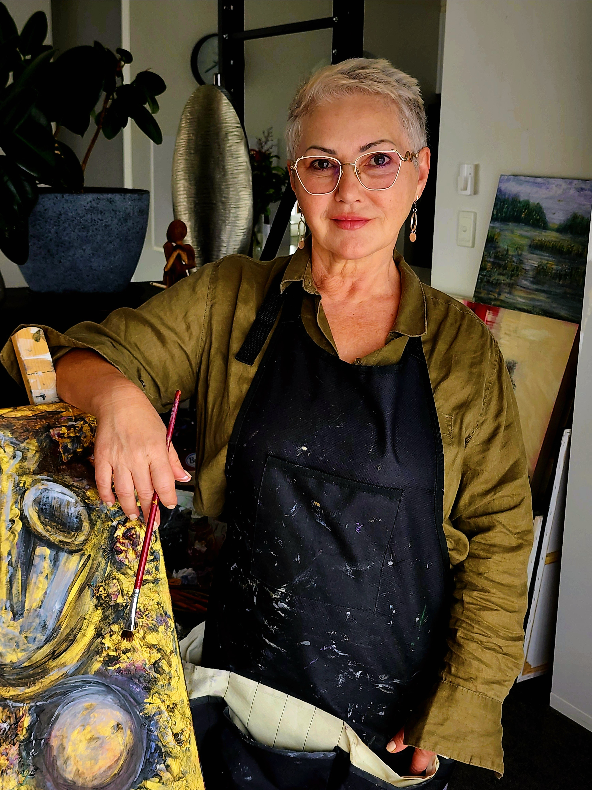

About the Artist
The story behind the art

Inesa Cole
Born in Ukraine and now living on Australia's Gold Coast, Inesa Cole is a painter, pianist, and former ESL teacher whose creative life began in earnest at the age of sixty. For six decades her art lived quietly in her imagination — a private getaway kept while family, teaching, and music took centre stage. These canvases are the first words of a long-awaited conversation, carrying the energy of a passion six decades in the making.
Inesa works in acrylic and mixed media, building semi-abstract, expressionist compositions in layered textures. Her years at the piano shape the way she paints: each stroke is a note, each layer a chord, each canvas composed with the same attention to tempo and harmony she brings to music. And her years as an ESL teacher — helping others find the right words — taught her how much is lost in translation, and how much of that unspoken language can be recovered in colour and form.
The Queensland coast is her constant study: the morning light on the surf, the vibrant charge of a summer storm, the sheer scale of the sub-tropical landscape. These works are not literal depictions but the emotional resonance of living inside that intensity — the crescendo of a place she now calls home. Every painting is an original, one-of-a-kind piece, offered in the belief that creativity has no expiry date and that art should speak directly to the heart.
- Medium
- Acrylic & Mixed Media on Canvas
- Style
- Semi-Abstract, Expressionist
- Based In
- Gold Coast, Queensland, Australia
- Born
- Ukraine
Get in Touch
Interested in a painting, a commission, or just want to say hello? Reach out anytime.
contact@inesacole.art
Send Email